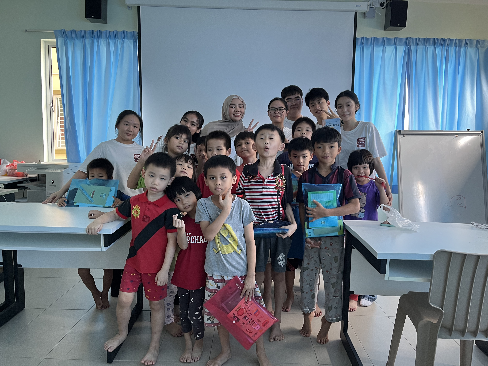
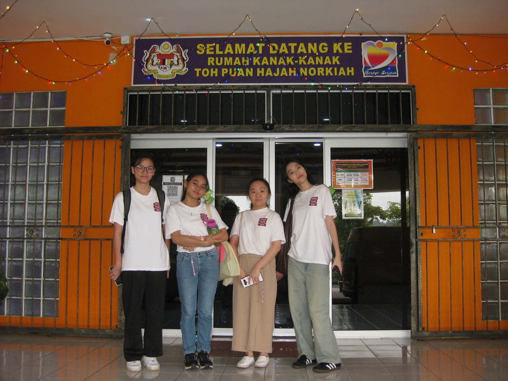
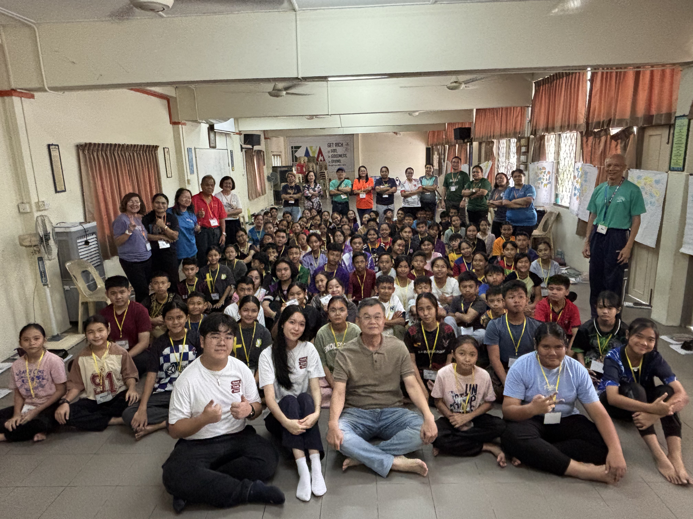

OUR PARTNERS
Working together with trusted organizations to create lasting impact in children's education.

The Salvation Army
Children's Home
The Salvation Army Kuching Children's Care Centre is a children's foundation located in Kota Samarahan, Sarawak. We teach them introductory English lessons biweekly on Saturday.
20+
Children Supported

Rumah Kanak-Kanak
Children's Home
Rumah Kanak-kanak Kuching is a children's foundation located at Siburan, Sarawak. Children who reside are mostly younger, in the Kindergarten to lower Primary levels.
30+
Children Supported

Pertubuhan Kebajikan Baiturrahmah
Children's Home
Pertubuhan Kebajikan Baiturrahmah Kuching is a children's foundation located at Petra Jaya, Kuching. We teach them Mathematics biweekly on Saturday.
10+
Children Supported

Yayasan Lasallian Kuching
Non-Profit Organization
Yayasan Lasallian Kuching advances education amongst community outreach in Sarawak. We conduct biweekly skills development workshops for primary school students across Sarawak.
200+
Children Supported